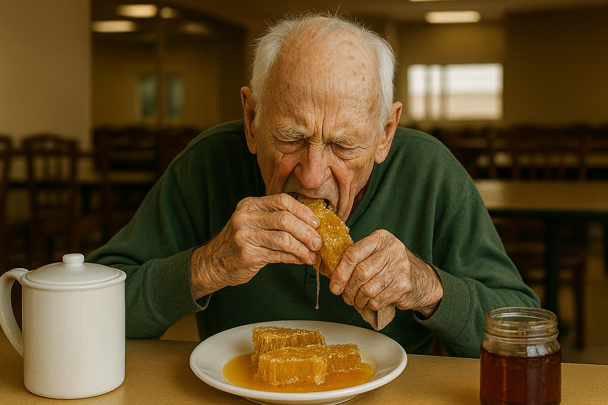
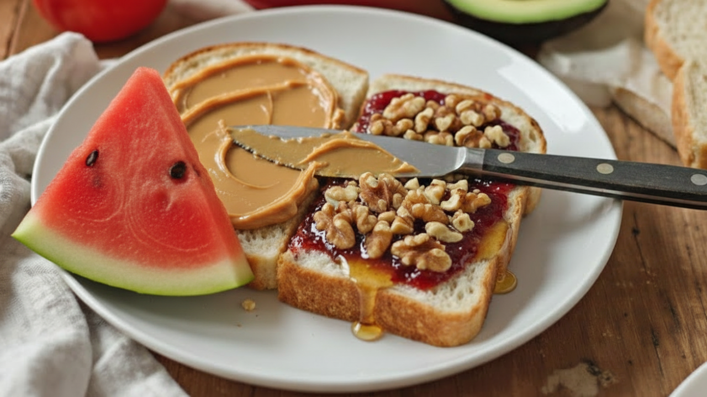
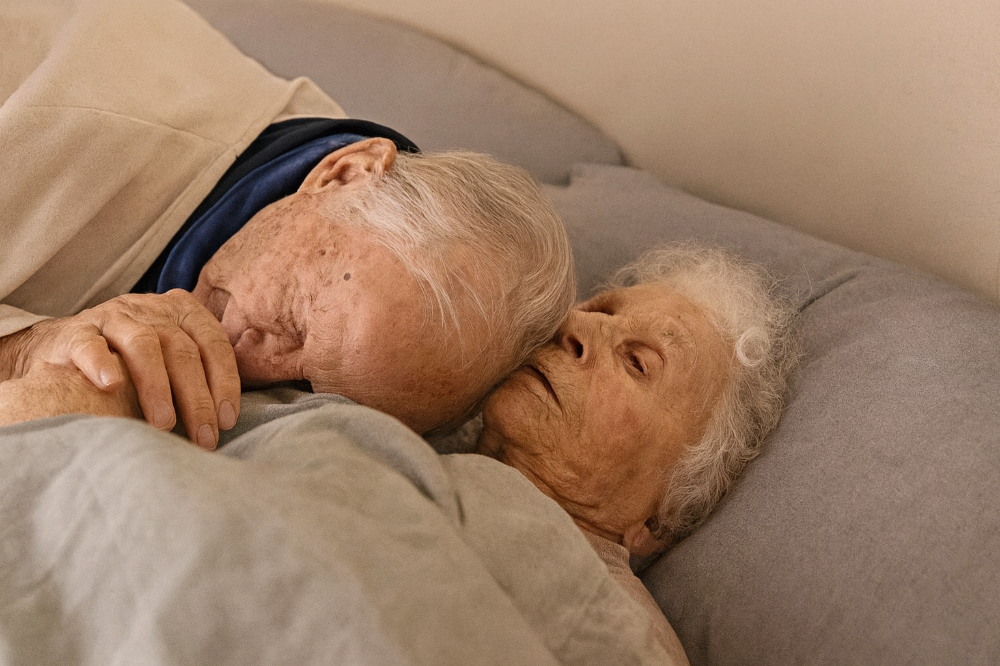

In one of the most watched 60 Minutes episodes of the year, Morgan Freeman sat down to reveal something he had kept private for years.
A diagnosis. A decline. And a recovery his neurologist says he still can't explain.
The special, which aired last week, has since generated more than 4.5 million views online — with thousands of families sharing it and asking the same question:
How?
In the interview, Freeman credits a simple natural protocol backed by years of research funded by Bill Gates — the same research the Bill and Melinda Gates Foundation has invested hundreds of millions of dollars into since Gates lost his own father to Alzheimer's.
The full 60 Minutes episode, including Bill Gates walking through the complete science behind the protocol, is available below.
Doctors and families across the country are calling it the most important thing they've watched this year.
And the best part?
You probably have all the ingredients to make this recipe today.
So if you've been forgetting names, appointments, or where you left your keys…
…you're definitely not alone.
Morgan says this easy, natural recipe — something he started doing in just minutes a day — helped him feel mentally sharper than he has in years.
His lines came back. His memories came back. His story came back.
Now this once-private tip is circulating quietly among people over 60 who want to support their brain health naturally.
Discover the simple at-home method that's helping thousands feel mentally sharper — before the video disappears.
Interviewer:
Hey Bill, my dad's turning 68 next week. Memory loss is hitting him hard — he mixed up his grandson's name three times right in front of us. Got any tips to tackle it after 60?
Bill Gates:
Folks over 60 always ask: 'Is there a pill for this?'
But here's the truth — you don't need pills, no Aricept, no Namenda, no cognitive puzzles!
Only 0.3% of doctors know the secret: memory loss isn't just age or genes — it's toxins clogging your brain.
Interviewer:
Whoa, toxins clogging the brain? So, what's the fix for that?
Bill Gates:
I'll tell you in 32 seconds what the pharmaceutical industry charges $26,000 a year to suppress.
The real cause of memory loss and Alzheimer's?
Toxic cadmium chloride accumulates silently in the brain, poisoning neurons and cutting off the energy supply — acting like rust choking your connections.
That's what triggers brain fog, forgetfulness, and even depression or isolation as you age.
Good news?
Once we cracked that, fixing it became a breeze.
Interviewer:
Bill, you released a presentation that got over 4.5 million views about a Neuro Honey blend to beat memory loss… is that the solution?
Bill Gates:
Absolutely. We found that honey combined with a rare natural form of minerals has anti-memory-loss compounds perfect for seniors.
And trust me, this Neuro Honey blend cleans your brain, wakes up buried memories, and restores focus, clarity, and independence.
It flushes those toxins out of your brain and stops them from accumulating.
I always recommend this to anyone dealing with memory loss.
Use it daily, and you'll see a huge change — not just in your brain, but in your whole life.
More energy, less mental tiredness, less crankiness, and a light, peaceful feeling.
Interviewer:
Yes, this presentation smashed every record! I'll share the link for anyone who wants to check it out. Can anyone try this at home?
Bill Gates:
Absolutely. The ingredients are simple and accessible.
Give it a shot yourself, or have your mom or dad try it.
Results begin showing in the first week — and keep building from there.
I use this Neuro Honey blend every morning, and it's my personal commitment to making sure no family goes through what mine did.
Bill Gates has one request for every caregiver watching:
"Please share this with your family and anyone you love over 60. Together we can make sure this information reaches the people who need it—before financial interests shut it down completely."
Sponsored Stories
by TaboolaThis Household Staple Found in 9 Out of 10 Kitchens Is Now Tied to Alzheimer's Risk
Brain Doctors Identified the #1 Dietary Driver of Memory Loss. Is It in Your Kitchen?
U.S. Neurologists Now Call This Popular Morning Drink "Liquid Dementia" — Do You Drink It?

This Common Morning Drink Is Now Being Called the Biggest Driver of Memory Loss

Memory Loss Has Been Directly Linked to a Beverage Most Americans Drink Before 9AM

Cognitive Decline Has Been Tied to This Everyday Food — Do You Eat It Often?

Scientists Release: This Nobel Prize Winner's Protocol Can Reduce Forgetfulness. Try It at Home.
Brain Doctors Beg Seniors: Take 1 Tbsp Tonight To Fight Brain Fog
Warning: This Popular Breakfast Choice Could Be Draining Your Mental Clarity
36.158 Comments
Madelyn Brown
My memory came back completely after just 3 weeks. Honestly, I thought I'd spend the rest of my life forgetting names and important moments. Having full mental clarity again is a blessing I never thought I'd experience.
Emma Miller
Just watched the video. I've never heard anyone explain dementia like that before. Everything makes so much sense now — I'm excited to start the honey ritual today.
Charlotte Wilson
I've tried everything — expensive supplements, memory therapy, even meditation. Nothing worked. After 15 years battling brain fog and forgetfulness, I finally feel sharp and focused again. It's unbelievable.
Sofia Mia
If this method lets me remember the little things — like birthdays and conversations — it will already be worth it. I'm so lucky to have found this by chance.
This post is no longer receiving comments!